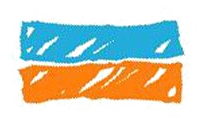
Between Two Seas is a four-day walking trail extending from the Black Sea to the Sea of Marmara, first established in 2013 along the projected Kanal İstanbul corridor. Repeated walks and surveys trace how both the route and the territory around it have been transformed.
This timeline brings together the megaprojects that remade the territory, the public and political events that shaped and contested its transformation, and photographs made by walkers across the trail’s four segments.
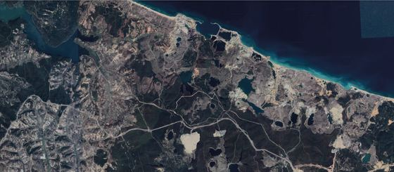
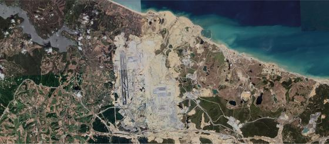
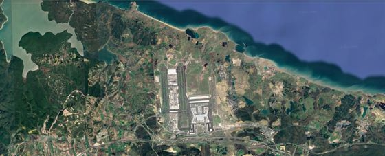
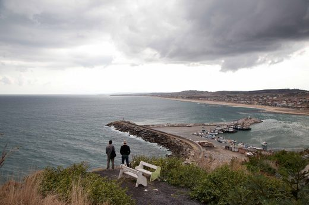
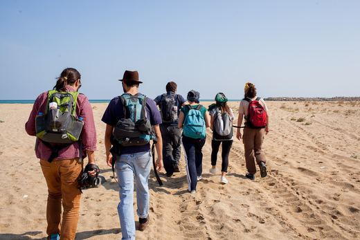
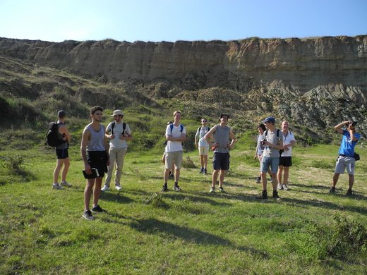
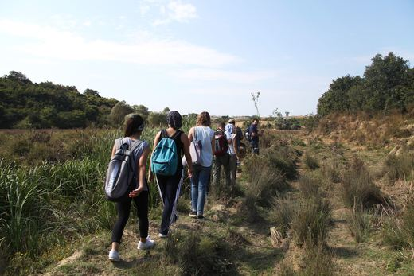
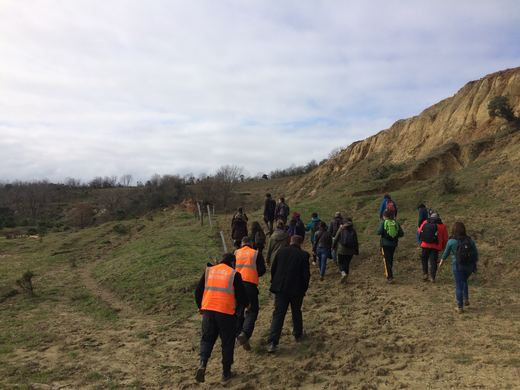
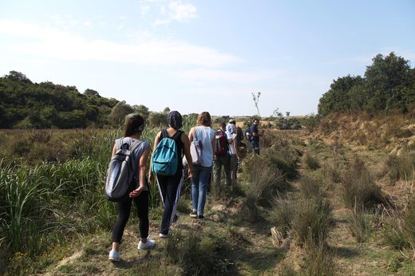
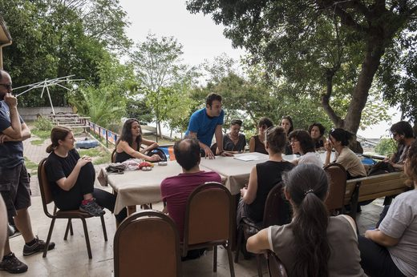
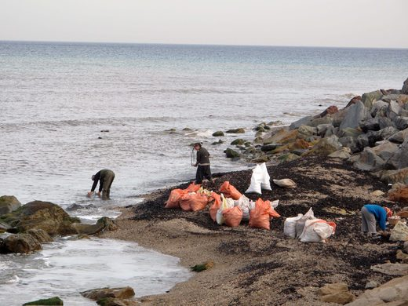
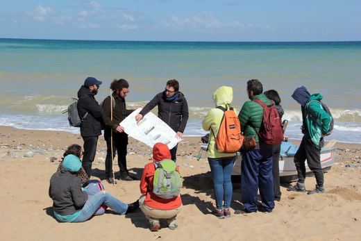
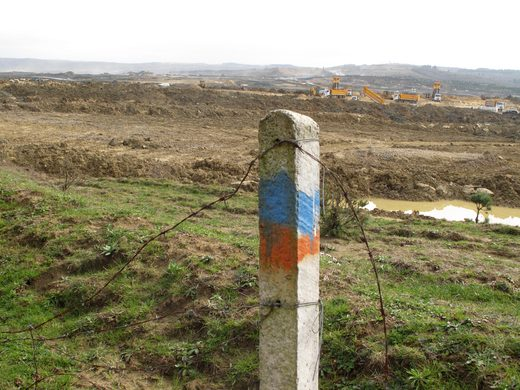
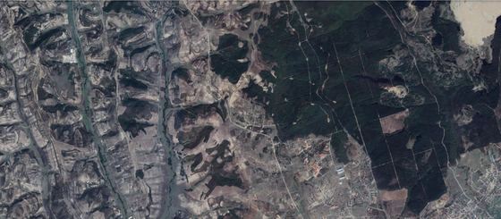
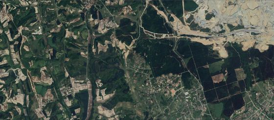
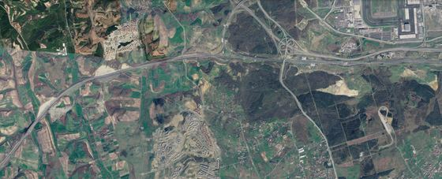
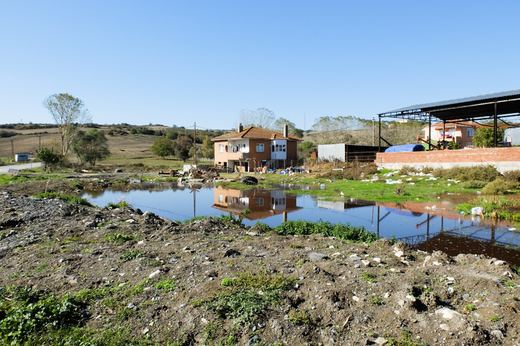
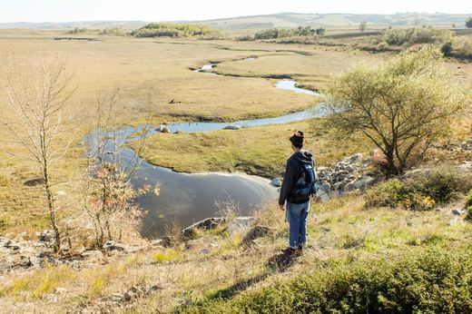
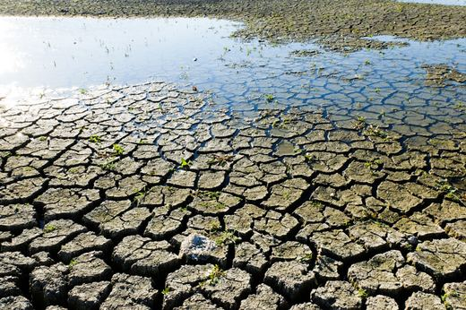
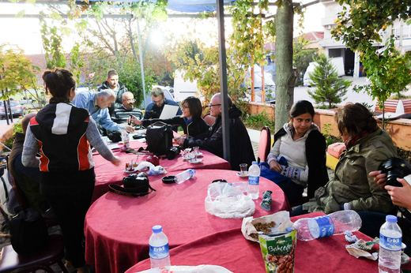
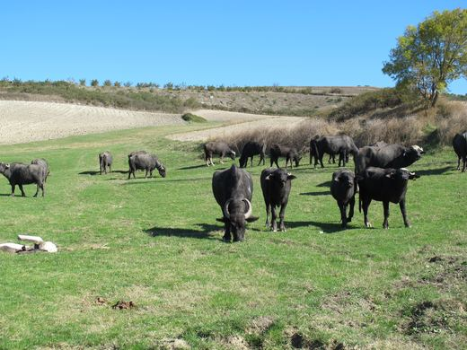
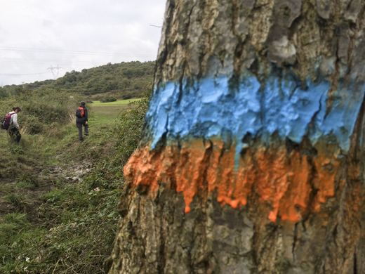
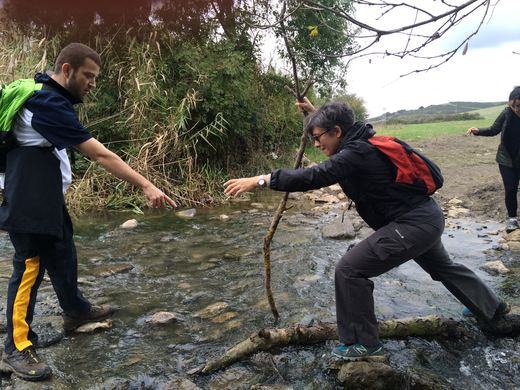
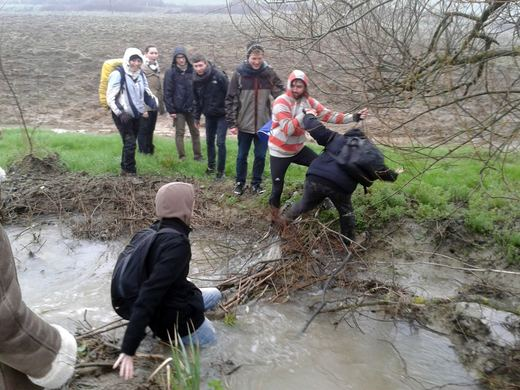
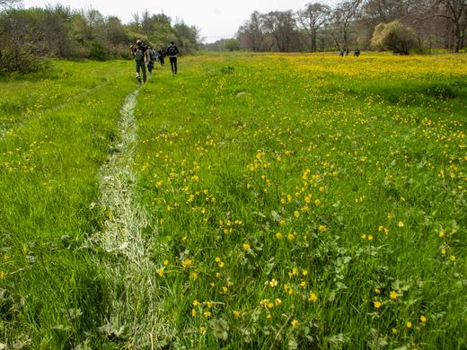
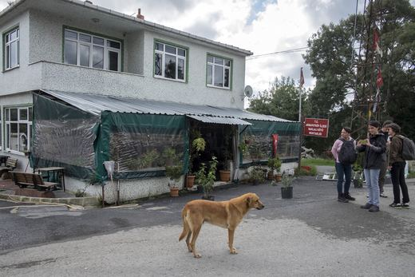
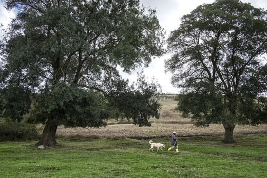
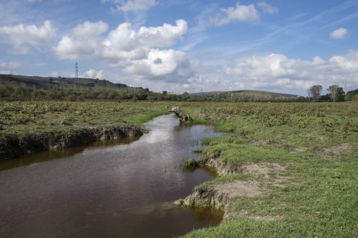
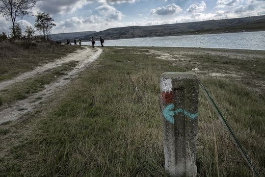
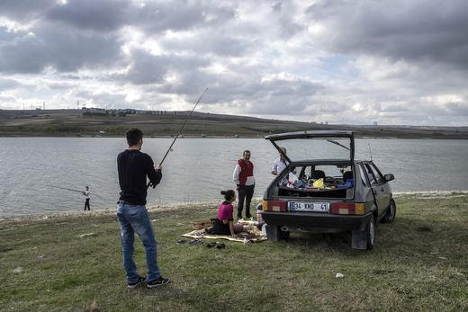
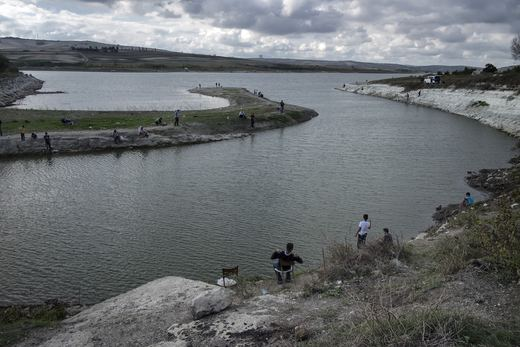
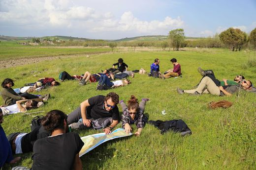
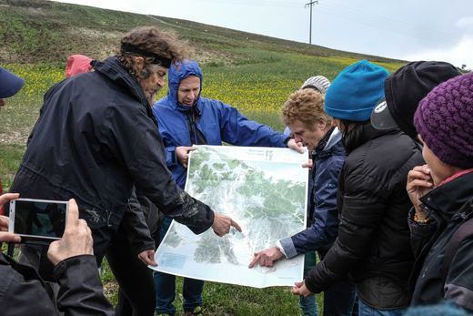
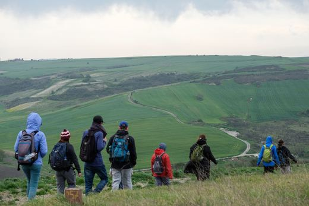
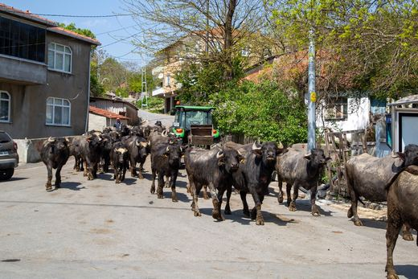
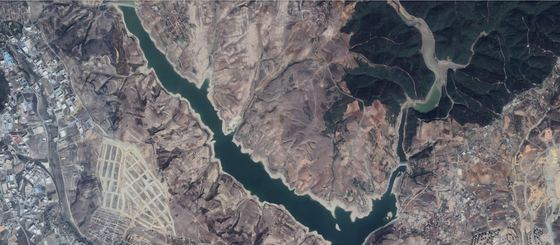
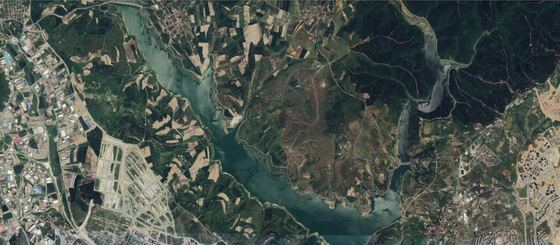
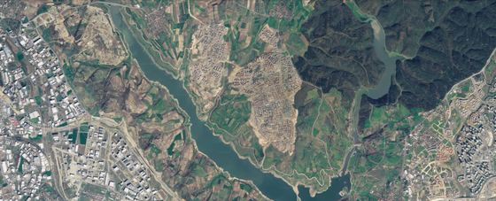
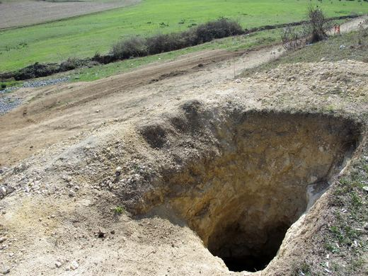
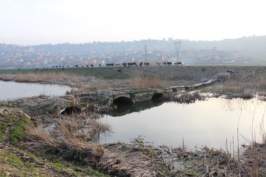
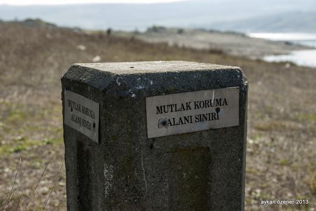
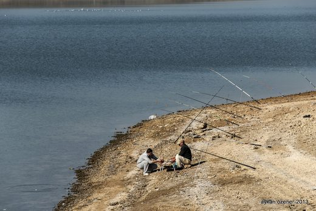
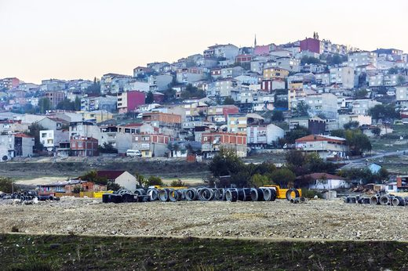
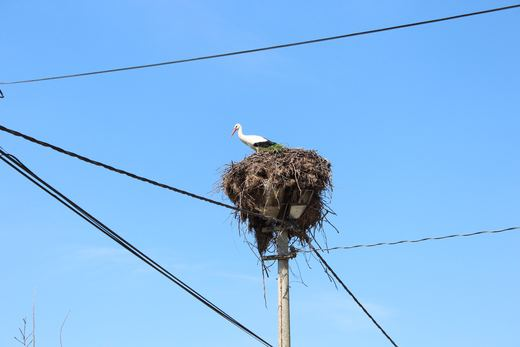
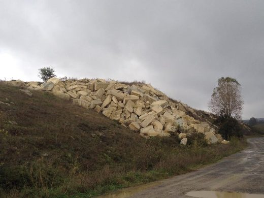
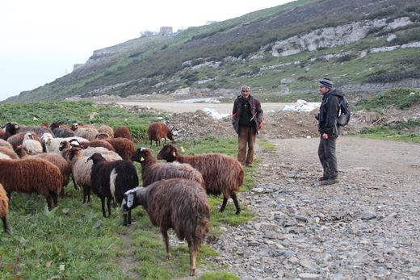
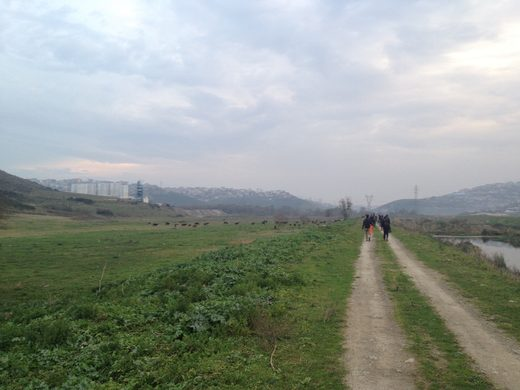
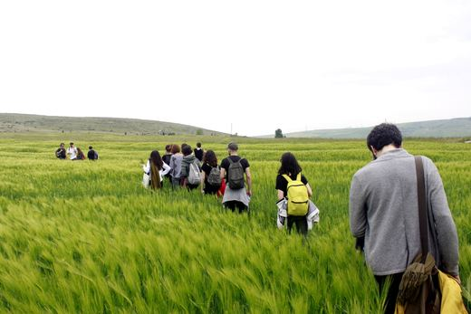
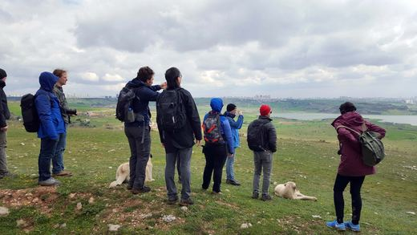
Sixty-two kilometres, one photograph at each kilometre, north to south. This is the survey made when the route was established in 2013 — the same sequence that hangs on the ledges in the exhibitions.